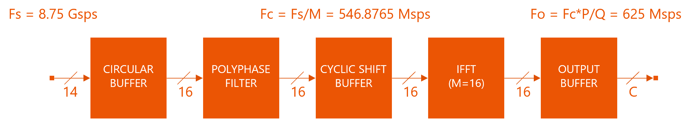
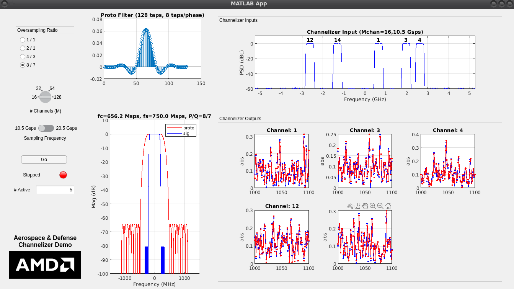
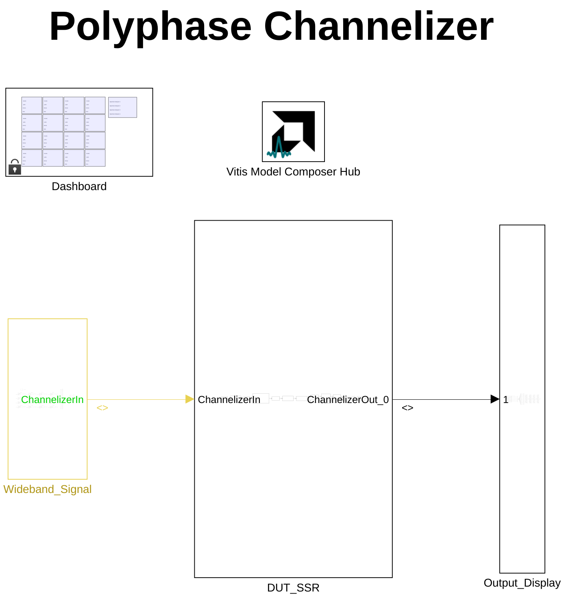
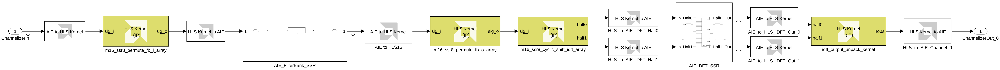
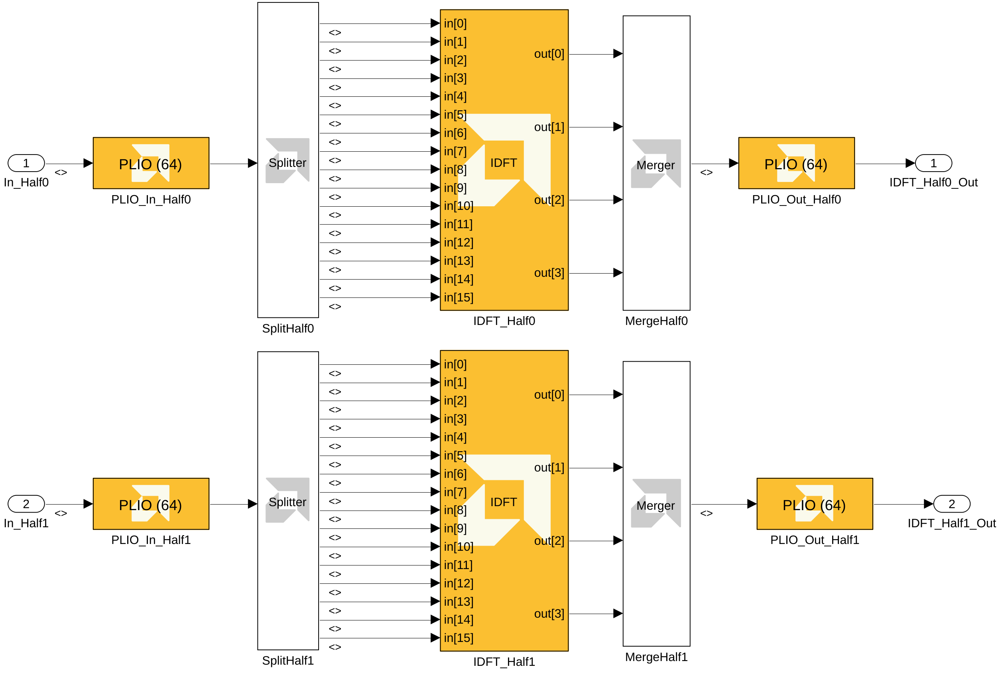
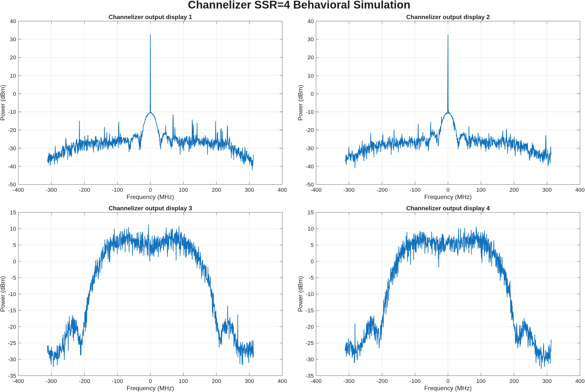
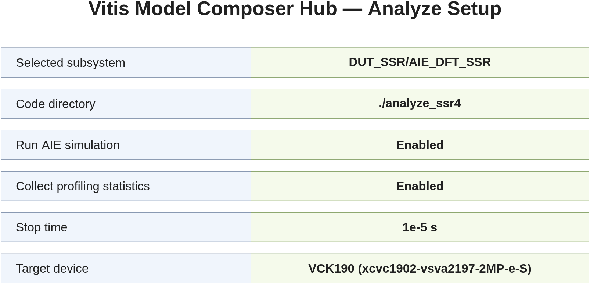
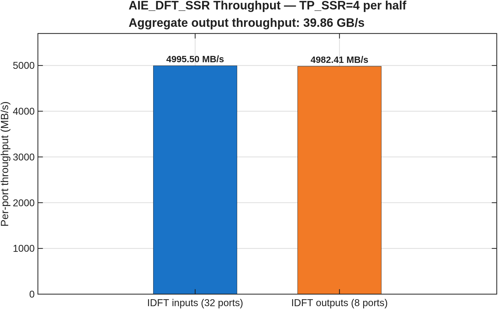

Version: Vitis Model Composer 2026.2
The polyphase channelizer down-converts a set of frequency-division multiplexed
channels carried in one wideband stream. This example models a high-throughput
implementation that combines AI Engine and programmable-logic (PL) processing
on a Versal adaptive SoC.
The AI Engine filter bank remains an SSR=8 custom kernel. The 16-point inverse
DFT is implemented with two Vitis Model Composer Buffer-IO IDFT library
blocks. Each block processes one half of the input sequence with TP_SSR=4,
so the complete design produces eight parallel rank streams. PL HLS kernels
pack the IDFT input windows and unpack the rank outputs into channel samples.
| Parameter | Value | Units |
|---|---|---|
| Input sampling rate (Fs) | 8.75 | Gsps |
| Number of channels (M) | 16 | channels |
| Interpolation factor (P) | 8 | n/a |
| Decimation factor (Q) | 7 | n/a |
| Channel bandwidth | 546.875 | MHz |
| Output sampling rate | 625 | Msps |
| Prototype-filter taps per phase (K) | 8 | taps |
The P/Q = 8/7 oversampling ratio produces one 16-channel output hop at
625 MHz. The 128-tap prototype filter contains 16 phases with 8 taps per phase.
The channelizer contains four algorithmic stages:

The detailed implementation in this example differs from the hand-written DFT
used in earlier releases. The library IDFT provides the transform, while HLS
glue preserves the original channelizer stream ordering.
The optional MATLAB app provides a configurable floating-point channelizer
model with a wider range of channel counts, rates, and oversampling ratios than
the fixed Versal implementation.

To run the app:
app folder.channelizer.Channelizer.slx.
The input and output samples are signed 16-bit complex values with 15
fractional bits. The Simulink stimulus is scaled by 2^15 before entering the
fixed-point channelizer, and the channel outputs are scaled by 2^-15 for
display.
DUT_SSR subsystem.
The processing sequence is:
input circular buffer (HLS)
-> SSR=8 polyphase filter bank (AI Engine)
-> output permute (HLS)
-> cyclic-shift and IDFT-window pack (HLS)
-> split IDFT halves (AI Engine)
-> IDFT output unpack (HLS)
-> channel outputs
The AI Engine portion contains two subsystems:
AIE_FilterBank_SSR imports the custom polyphase_fir class kernel withAIE_DFT_SSR contains two Buffer-IO library IDFT blocks.Open AIE_DFT_SSR to inspect the transform architecture.

Each half has the following parameters:
| IDFT parameter | Value |
|---|---|
| Data and twiddle type | cint16 |
TP_POINT_SIZE |
16 |
TP_NUM_FRAMES |
256 |
TP_CASC_LEN |
4 |
TP_SSR |
4 |
| API | Buffer IO |
Each IDFT half therefore has 16 input windows (TP_SSR * TP_CASC_LEN)
and 4 output rank windows. The splitter fans the packed half-window into the
16 cascade/rank inputs; the merger collects the four rank outputs.
The library input window is 2048 cint16 samples per lane. The size follows
the library's vector padding:
padded frame = ceil(16, 8 * TP_CASC_LEN) = 32 samples
lane window = 256 frames * 32 / TP_CASC_LEN = 2048 samples
Each frame therefore carries four valid samples followed by four zeros on each
input lane. The output also contains four valid bins followed by four padded
zeros per rank and frame; the output-unpack HLS kernel drains those padding
words before processing the next frame.
The matrix PLIO blocks are configured for 64 bits at 625 MHz. During AI Engine
code generation they expand to 16 input PLIOs and 4 output PLIOs per half.
Four imported HLS kernels implement the PL portion:
m16_ssr8_permute_fb_i_array: input circular buffer, 7 streams to 8.m16_ssr8_permute_fb_o_array: filter-bank output permutation, 8 streams.m16_ssr8_cshift_idft_array: cyclic shift and duplication intoidft_output_unpack_kernel: consumes four rank streams from each half,AIE to HLS and HLS to AIE blocks convert between vectors of four cint16
samples and one 128-bit HLS stream word. The IDFT input bridges produce 2048
samples per lane, and the AIE-to-HLS output-size setting is 1024 per half.
Dashboard subsystem in a separate window.1e-5.
The model is preconfigured to analyze DUT_SSR/AIE_DFT_SSR.
AIE_DFT_SSR../analyze_ssr4.
The design compiles to 32 active AI Engine cores. The cycle-approximate
AI Engine simulation reports:
| Port group | Count | Per-port throughput | Aggregate |
|---|---|---|---|
| IDFT inputs | 32 | 4995.50 MB/s | 159.86 GB/s |
| IDFT outputs | 8 | 4982.41 MB/s | 39.86 GB/s |

All eight simulator output files match their Simulink reference
files (the generated .diff files are empty).
This example demonstrates:
TP_SSR=4 andTP_CASC_LEN=4 per half.F. J. Harris et al., "Digital Receivers and Transmitters Using Polyphase
Filter Banks for Wireless Communications",
IEEE Transactions on Microwave Theory and Techniques, Vol. 51, No. 4,
April 2003.
For the original hardware architecture, see the
Polyphase Channelizer tutorial.
Copyright (c) 2026 Advanced Micro Devices, Inc.
Licensed under the Apache License, Version 2.0 (the "License");
you may not use this file except in compliance with the License.
You may obtain a copy of the License at
http://www.apache.org/licenses/LICENSE-2.0
Unless required by applicable law or agreed to in writing, software
distributed under the License is distributed on an "AS IS" BASIS,
WITHOUT WARRANTIES OR CONDITIONS OF ANY KIND, either express or implied.
See the License for the specific language governing permissions and
limitations under the License.